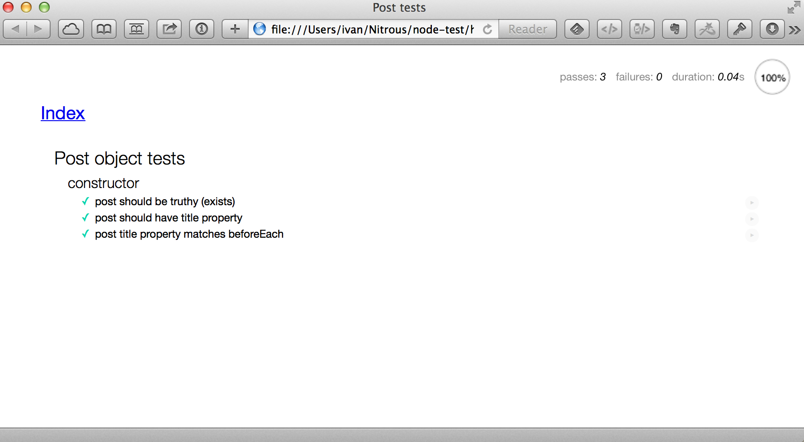

In computer programming, unit testing is a software testing method by which individual units of source code, sets of one or more computer program modules together with associated control data, usage procedures, and operating procedures are tested to determine if they are fit for use. Intuitively, one can view a unit as the smallest testable part of an application. In procedural programming, a unit could be an entire module, but it is more commonly an individual function or procedure. In object-oriented programming, a unit is often an entire interface, such as a class, but could be an individual method. Unit tests are short code fragments created by programmers or occasionally by white box testers during the development process.
Mocha is a feature-rich JavaScript test framework running on node.js and the browser, making asynchronous testing simple and fun. Mocha tests run serially, allowing for flexible and accurate reporting, while mapping uncaught exceptions to the correct test cases.
Chai is a BDD / TDD assertion library for node and the browser that can be delightfully paired with any javascript testing framework … Chai has several interfaces that allow the developer to choose the most comfortable. The chain-capable BDD styles provide an expressive language & readable style, while the TDD assert style provides a more classical feel
Mocha and Chai (along with Sinon which we will use later) are two of the leading JS testing frameworks. They are frequently used together. An alternative library that includes both features of Mocha, Chai, and Sinon is Jasmine.
You can use the [Hello World Express] as a starting point for this tutorial, or
any other app you have. cd into your project's root folder.
Install Mocha as a global NPM module:
npm install -g mocha
We will do this globally to be able to use the mocha command from our command
line. We will also install Mocha and Chai as devDependency-ies in our project.
npm install mocha chai --save-dev
Make a test directory: mkdir -p test/unit
We will also make a lib directory to hold our "Plain Old JavaScript Objects"
(POJSOs)
Here's our simple Post object again:
// lib/post.js
var Post = function(title) {
return {title: title};
}
module.exports = Post;
Great, we have a Post object constructor that can initialize an instance of a post with a title property.
Let's test to see that the constructor does what we think it will. The returned object should have a title property.
// test/post_test.js
var expect = require('chai').expect,
Post = require('../lib/post');
describe('Post object tests', function() {
var post;
beforeEach(function() {
post = new Post('A test post');
});
describe('constructor', function() {
it('post should be truthy (exists)', function() {
expect(post).to.be.ok;
});
it('post should have title property', function() {
expect(post).to.have.property('title');
});
it('post title property matches beforeEach', function() {
expect(post.title).to.equal('A test post');
});
});
});
Now we can run the mocha tests with the Mocha command line tool.
mocha test/unit
should do the trick!
The next step is to use the grunt-simple-mocha
grunt plugin to be able to type grunt test and run this, and other, unit tests.
By now you should be familiar with Grunt, and configuring grunt plugins. Try it out.
We can also run these tests in the browser environment. For this, we will need a 'test harness' HTML file.
bower install mocha chai
<!-- test/browser/index.html -->
<!DOCTYPE html>
<html>
<head>
<meta charset="utf-8">
<title>Post tests</title>
<link rel="stylesheet" media="all" href="../../bower_components/mocha/mocha.css">
</head>
<body>
<div id="mocha"><p><a href=".">Index</a></p></div>
<div id="messages"></div>
<div id="fixtures"></div>
<script src="../../bower_components/mocha/mocha.js"></script>
<script src="../../bower_components/chai/chai.js"></script>
<script src="../../lib/post.js"></script>
<script>mocha.setup('bdd')</script>
<script src="./post_test.js"></script>
<script>mocha.run();</script>
</body>
</html>
and
// test/browser/post_test.js
var expect = chai.expect
describe('Post object tests', function() {
var post;
beforeEach(function() {
post = new Post('A test post');
});
describe('constructor', function() {
it('post should be truthy (exists)', function() {
expect(post).to.be.ok;
});
it('post should have title property', function() {
expect(post).to.have.property('title');
});
it('post title property matches beforeEach', function() {
expect(post.title).to.equal('A test post');
});
});
});
Now open this HTML document in the browser.
open test/browser/index.html

Stretch goal: The next step is to use the grunt-mocha grunt plugin to run these browser tests headlessly via PhantomJS.
TODO: This is a work in progress …